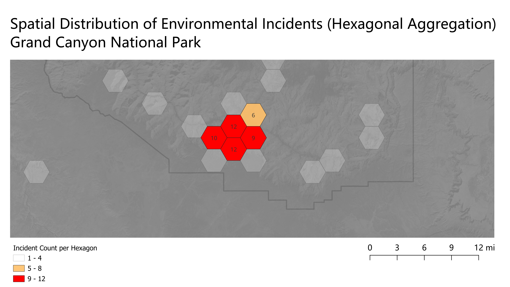

Project 2: AI-Assisted Geospatial Workflow Evaluation
Objective
The objective of this project was to evaluate the effectiveness of an AI-generated geospatial analysis workflow by comparing its recommendations against a real-world implementation in QGIS. This exercise focuses on assessing whether AI-generated guidance can produce valid, repeatable spatial analysis results.
AI Prompt
A general prompt was provided to an AI system to generate a repeatable geospatial workflow:
A GIS analyst has been provided with a spatial dataset containing incident locations and associated incident types. Describe a general, repeatable geospatial analysis workflow that could be used to determine which incident types are most common in different locations. Do not reference any specific software. Instead, focus on the methodological steps required to prepare the data, define spatial comparison areas, summarize incident patterns, and validate the results.
AI-Generated Approach
The AI response outlined a structured workflow that included data preparation, spatial aggregation using grids or administrative boundaries, and summarization of incident counts within defined spatial units. It also recommended the use of density analysis and hotspot detection techniques to identify patterns.
Methodology (QGIS Implementation)
To evaluate the AI-generated workflow, a subset of the dataset was filtered to include environmental incidents. A hexagonal grid was generated over the study area to serve as a uniform spatial aggregation framework.
This implementation represents a scoped application of the AI-recommended workflow, focusing on a single incident type to validate the aggregation approach before expanding to comparative analysis.
- Creation of a hexagonal tessellation to define spatial comparison units
- Spatial join of incident points to hexagonal polygons
- Aggregation of incident counts within each hexagon
- Application of graduated symbology to visualize spatial intensity
- Conditional labeling applied to emphasize higher-density areas
Results
The resulting map clearly identifies areas of concentrated environmental incidents, with distinct clustering observed in specific regions of the study area. The use of hexagonal aggregation provided a structured and consistent method for summarizing spatial patterns, improving interpretability compared to raw point distributions.
Evaluation of AI Response
The AI-generated workflow provided a strong conceptual foundation, particularly in recommending spatial aggregation and pattern analysis techniques. However, the original prompt aimed to determine which incident types are most common across different locations, which introduces a categorical comparison component.
The implemented workflow focused on a single incident category (environmental incidents) to establish a clear and interpretable aggregation method. This allowed for validation of the spatial summarization approach, but does not independently answer the full comparative aspect of the original question.
To fully address the prompt, the same workflow would need to be repeated across multiple incident types, with results compared to identify dominant patterns in each location. This highlights a key limitation of the AI response, which did not explicitly define how categorical comparisons should be operationalized in practice.
Overall, the AI-generated methodology was directionally correct, but required refinement and scoping to produce a clear, repeatable, and interpretable analytical outcome.
This evaluation demonstrates the importance of interpreting AI-generated guidance critically, ensuring that analytical workflows not only execute correctly, but also fully address the intended research question.
Key Takeaways
This project demonstrates that AI can effectively assist in outlining geospatial methodologies, but human expertise remains essential for refining, implementing, and validating those workflows. The resulting process is repeatable and can be applied to other datasets and incident types, making it a flexible approach for spatial analysis.
